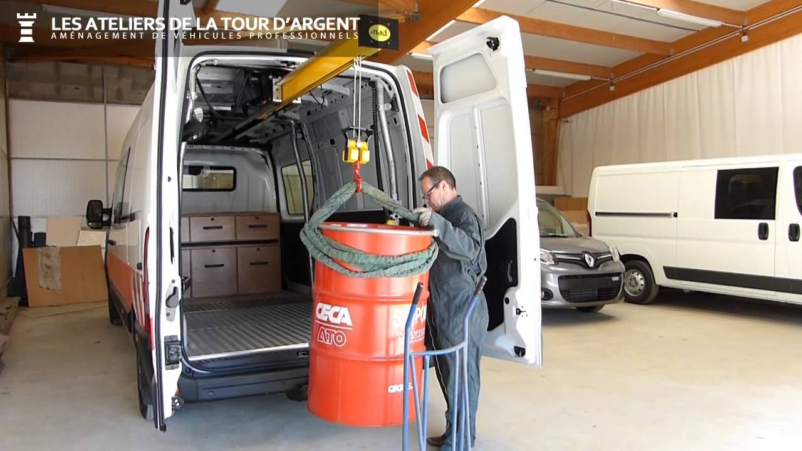

L'installation de notre équipement simple et efficace
Notre technologie MAD est conçue pour garantir une téléportation en toute sécurité.

Les équipements de roues automobiles sont des éléments cruciaux pour assurer la sécurité,
Ils sont conçus pour résister aux contraintes de la route.
